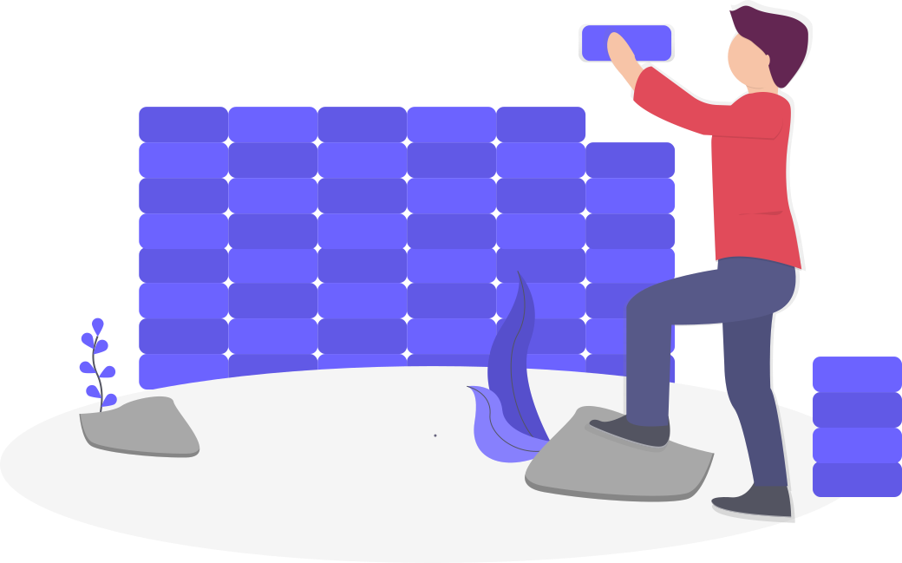

Let's start building
Snippets - is a collection of elements and combined components that you will find on live pages. Move quickly with copy-to-clipboard feature and build everything from a prototype to a fully designed website.
p { color: red }